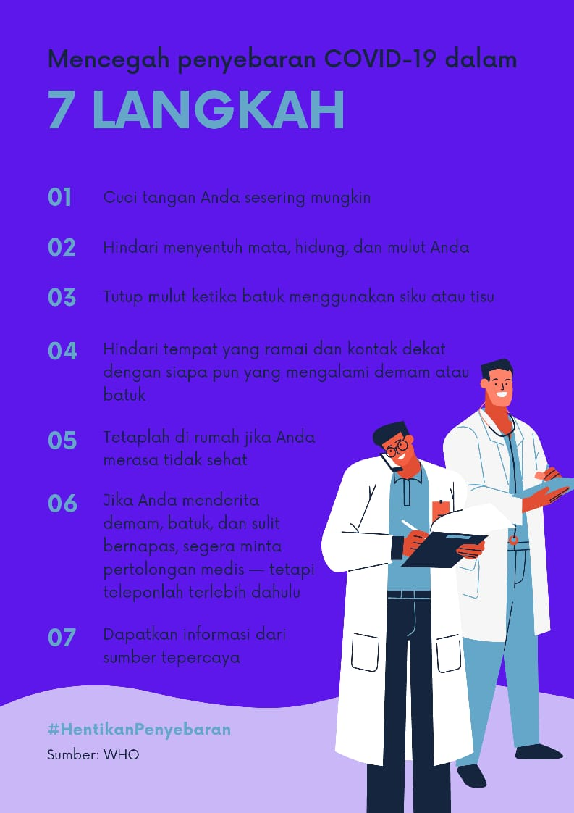

INGAT!!!
Lakukan 7 Hal untuk Mencegah Angka Covid-19 yang Kian Meningkat
Di Indonesia, pandemi Covid-19 sudah berlangsung selama hampir satu tahun.
Pertanyaannya, masih ingatkah berbagai cara mencegah penularan virus Covid-19? Atau justru sudah bosan melakukannya?
Nah, berikut beberapa cara mencegah penularan Covid-19 yang angkanya kian meningkat :
- Cuci tangan anda sesering mungkin
- Hindari menyentuh mata,hidung,dan mulut anda
- Tutup mulut ketika batuk menggunakan siku atau tisu
- Hindari tempat yang ramai dan kontak dekat dengan siapa pun yang mengalami demam dan batuk
- Tetaplah di rumah jika anda merasa tidak sehat
- Jika anda menderita demam,batuk, dan sulit bernapas,segera minta pertolongan medis-tetapi teleponlah terlebih dahulu
- Dapatkan informasi dari sumber terpercaya